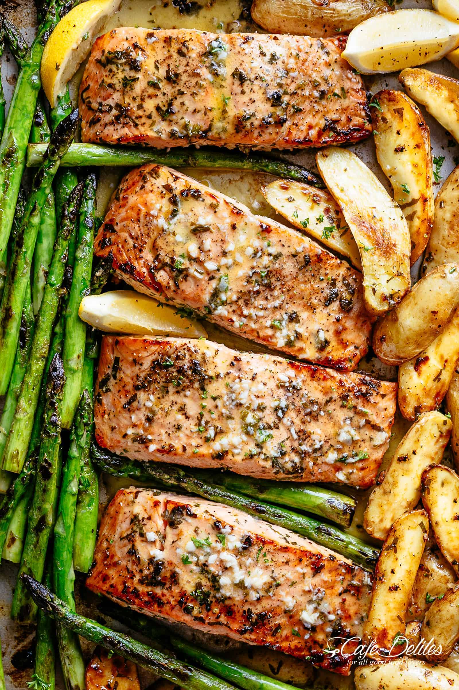

Baked Salmon

Description
Salmon is a flavorsome fish, ideal for baking and rich in protein
Ingredients
- Salmon Darnes
- OLive Oil
- Salt and Pepper
- Fresh Lemon
Steps
- Lightly drizzle the oil over the salmon
- Season with salt and pepper/li>
- Bake in a preheated overn at 180c for 15 minutes
- Drizzle lemon over the cooked salmon